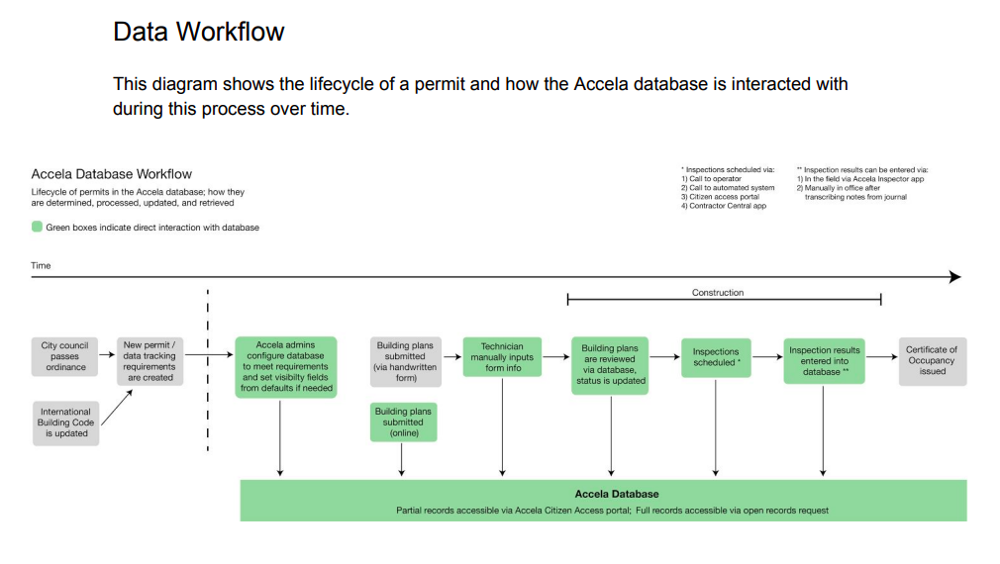
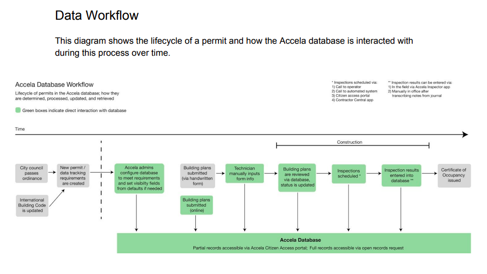

BeltLine Data Walk
August - November 2017
Overview
This project is a conceptualization for an experiential art project along Atlanta's BeltLine trail. Integrated into the trail, it takes walkers on a data-based journey through Atlanta's carbon footprint and educates on how much (or little) our famed tree canopy negates Atlanta's overall environmental impact.
Project Details
Group members:
Phenix TangMy roles:
Brainstorming, Research, Data Field Guide Creation, Mockups (Long graph and tree labels)Process
Context
Atlanta's BeltLine is a unique focal point for discussions of sustainability and social issues. As a fundamentally transit-based endeavor, the BeltLine is also a great location for a project that comments on Atlanta's carbon output.
This project was very open-ended, requiring only that we use data and design for the anywhere along the BeltLine trail. My partner and I saw it as an opportunity to hold a mirror to some of Atlanta's most important issues, highlighting them with a data-driven narrative.
Data Field Guide
We began with a few local datasets such as Trees Atlanta plantings, tree removal permits, and building plan permits. Phenix and I chose these datasets because we had an environmental interest from the beginning of the project, and these provided datasets were the most in line with that approach.
The first half of the course focused on the data itself. Data is never the whole story on its own, so we conducted research and interviews to better understand the context of our datasets. We created data "field guides" to document our findings of how the data is collected, why, by who, and any flaws found. We also created different visualizations to help explore the vast content of the datasets and different methods of framing them.
 

{kind=link}

My field guide focused more on the permit datasets (tree removal, building plans, and arborist complaints) from the Accela citizen access portal rather than the Trees Atlanta data, because the provided Accela data was less straightforward.
I conducted interviews with an Accela database administrator, an Atlanta arborist, and two contacts at Tree Atlanta. These findings paved the way for finding more data using the Accela database, as well as identifying the limitations of tree tracking data in the city currently.
Data Walk
Once we had researched our datasets, we began to plan our data walk. Phenix and I went through several iterations until we landed on our final idea. Early versions were more heavily focused on the Trees Atlanta plantings dataset alone, introducing passersby to the actual trees that were planted by volunteers. We considered tagging the tree with the data and using fun physical mediums (like paper fortune tellers and string art boards) to draw attention.
{kind=link}
To add more depth to our narrative, we began to include carbon footprints in the data walk. After researching outside data sources and visualizing Atlanta's overall carbon footprint, we knew we wanted to create a to-scale graph in the walk. Atlanta's overall emissions are staggering, and this is highlighted further by factoring the tree dataset in. Even considering the CO2 that our famous tree canopy negates, the 'City in a Forest' does not come close to being sustainable.


In addition to the 100ft long to-scale representation of carbon emitted / negated, we also kept the tree-tagging element of our previous iterations. For aesthetic cohesion, the tree tags were converted to markers printed on the concrete trail alongside the large graph. We also added comparison activities to make the amounts negated per tree more personal and relatable.
Reflection
Storytelling with Data
One of the most educational aspects of this project was working closely with our data. Data is often framed as being able to "speak for itself," but the real life of this project came from the way we framed it. I learned that data is nothing without understanding its context, and you can make a multitude of different narratives from the same data. The real key is examining it for yourself and finding the story you think it tells best.